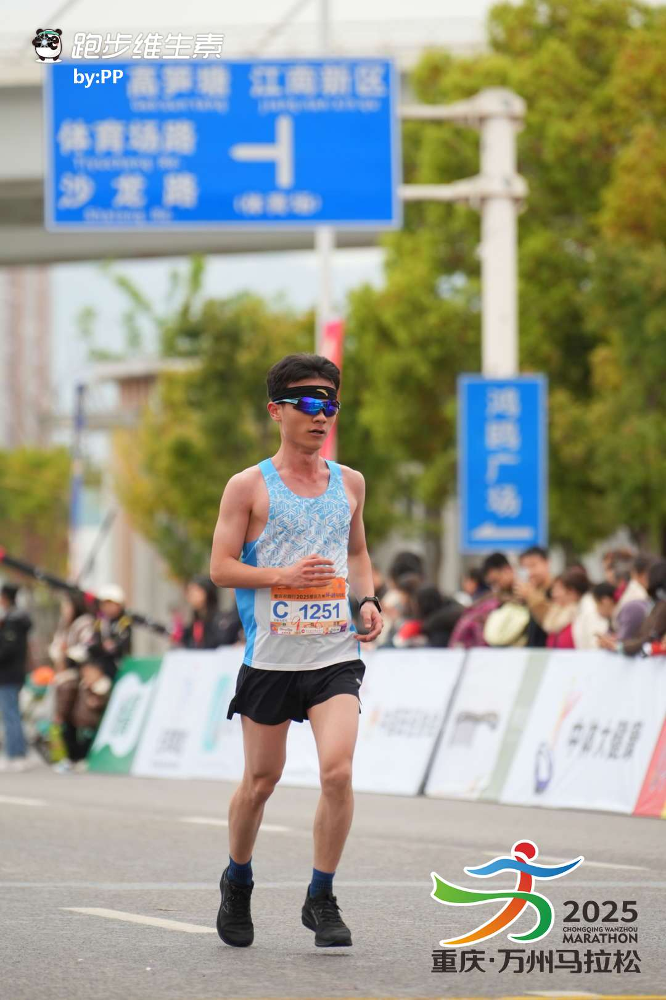
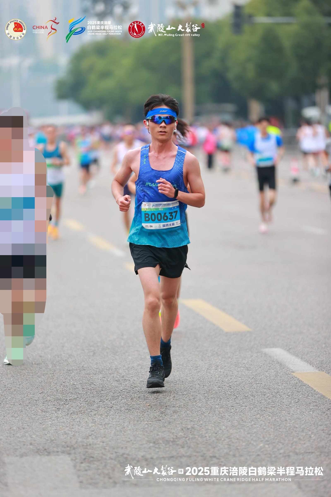
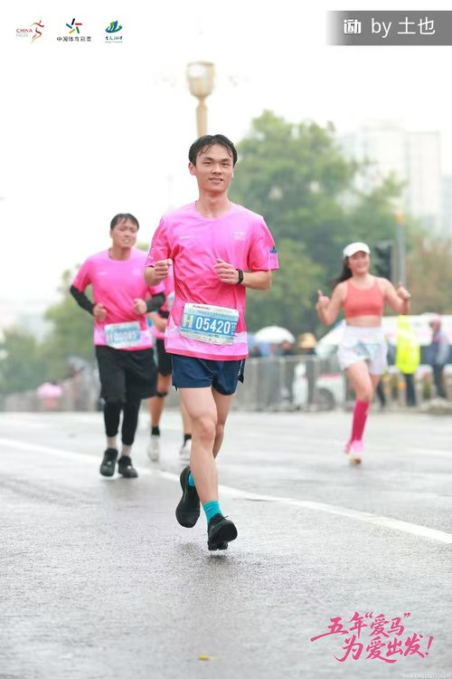
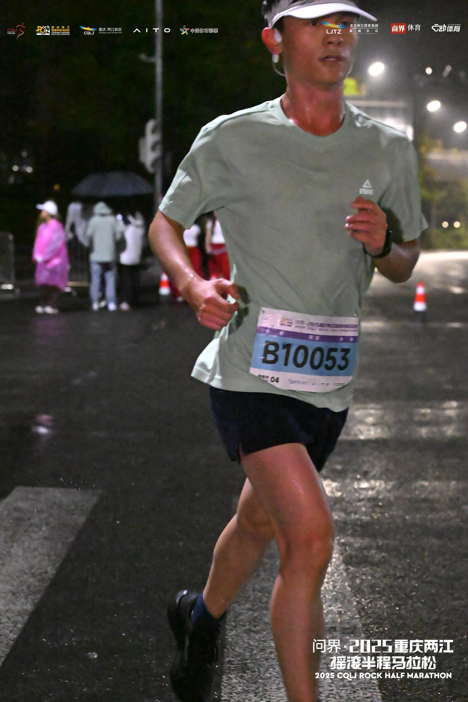

2025年3月30日 重庆万州环湖马拉松
在万州的赛道上奔跑，感受长江三峡的壮丽风光，体验马拉松运动的无限魅力。

2025年9月20日 贵阳 天空之镜越野赛
在崎岖的山路上奔跑，感受大自然的魅力，体验不一样的马拉松之旅。

2025年10月26日 重庆涪陵白鹤梁半程马拉松
在美丽的涪陵赛道上，感受乌江两岸的壮丽景色，享受奔跑带来的无限快乐。

2025年11月2日 重庆长嘉汇半程马拉松
在重庆美丽的长嘉汇赛道上奔跑，感受山城独特的城市风貌，体验半程马拉松的挑战与乐趣。

2025年11月30日 重庆忠县马拉松暨第八届长江三峡马拉松
在忠县的赛道上奔跑，感受长江三峡的壮丽风光，体验马拉松运动的无限魅力。

2025年11月9日 重庆江津东方爱情马拉松
在江津美丽的赛道上奔跑，感受长江之滨的浪漫风情，体验爱情马拉松的独特魅力。

2025年6月29日 咸丰马拉松
在咸丰的山间赛道上奔跑，感受土家族文化的独特魅力，体验马拉松运动的激情与活力。

2025年10月18日 重庆两江摇滚半程马拉松
在重庆两江新区赛道上奔跑，伴随着摇滚音乐的激情节奏，体验不一样的马拉松之旅。
1 / 10
我的马拉松历程
用脚步丈量城市，用地图记录足迹。每一座城市都有独特的风景，每一次奔跑都是难忘的旅程。


成绩与奖牌
每一滴汗水都不会白流，每一次坚持都值得骄傲。成绩是最好的见证，奖牌是荣誉的象征。
我的马拉松历程
2024年12月8日 重庆江津东方爱情马拉松
2025年3月23日 重庆垫江马拉松
2025年3月30日 重庆万州环湖马拉松
2025年5月11日 多彩贵州马拉松超级联赛（第二站）暨遵义马拉松
2025年6月29日 咸丰马拉松
2025年9月20日 爽爽贵阳 天空之镜越野赛
2025年10月18日 重庆两江摇滚半程马拉松
2025年10月26日 重庆涪陵白鹤梁半程马拉松
2025年11月2日 重庆长嘉汇半程马拉松
2025年11月9日 重庆江津东方爱情马拉松
2025年11月30日 重庆忠县马拉松暨第八届长江三峡马拉松
成绩详情
点击左侧马拉松项目查看详细成绩
马拉松的意义
挑战自我
不断突破极限，超越昨天的自己
坚持不懈
日复一日的训练，铸就今天的成就
享受过程
在奔跑中感受生活的美好与激情
收获友谊
与跑友同行，分享快乐与成长